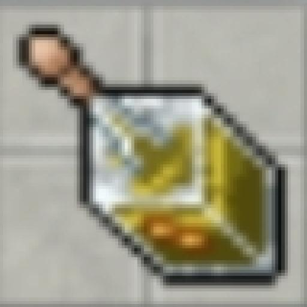

Guia de Orbs
As Orbs são itens especiais que, quando equipados em um Pokémon, concedem bônus passivos poderosos, melhorando seus atributos ou habilidades em batalha.

Orb de XP
Quando equipada, esta orb aumenta permanentemente o ganho de experiência do Pokémon em +20%, acelerando seu progresso de nível.

Orb de Regeneração (Regen)
Esta orb potencializa o efeito de itens de cura. Quando o Pokémon usa um held do tipo "Heal", a regeneração de vida é aumentada em 5 vezes.
Como Obter as Orbs?
As principais maneiras de conseguir Orbs no jogo são:
- Como recompensa na Quest Cristais.
- Participando de eventos especiais.